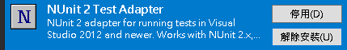
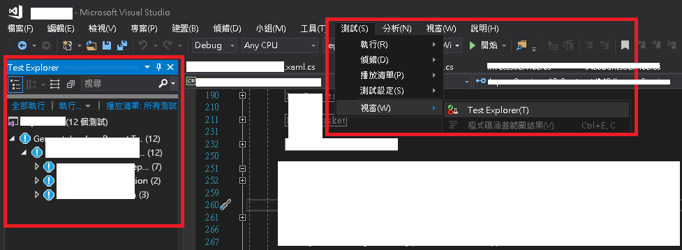
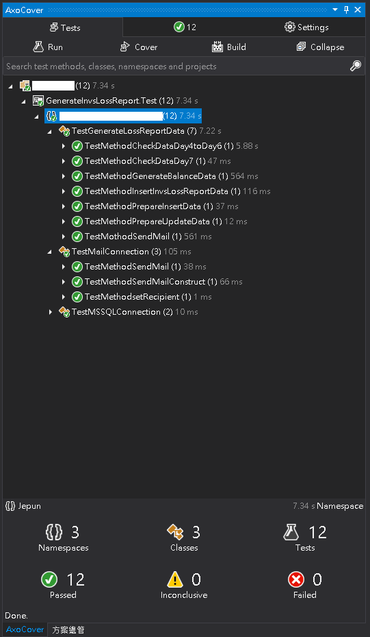
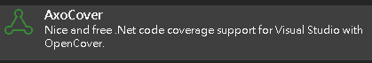
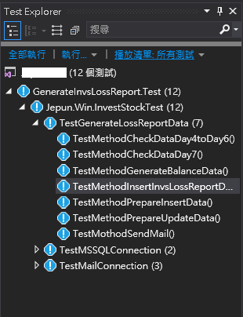
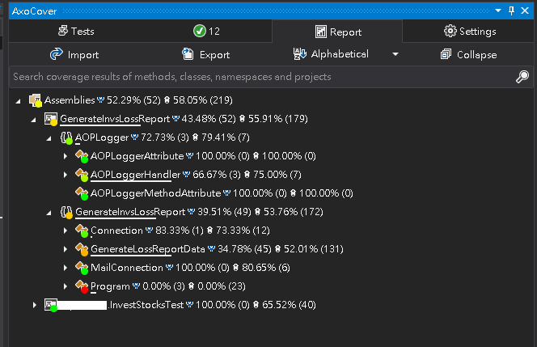
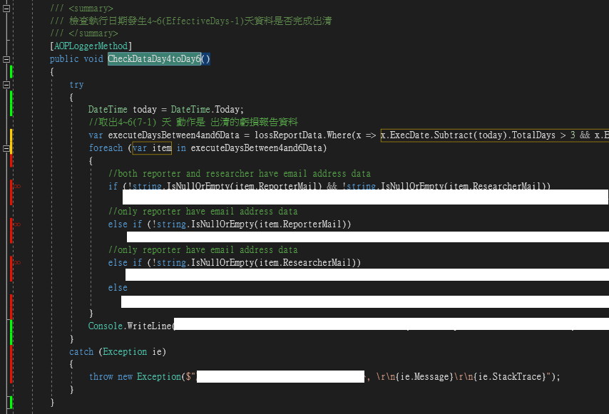
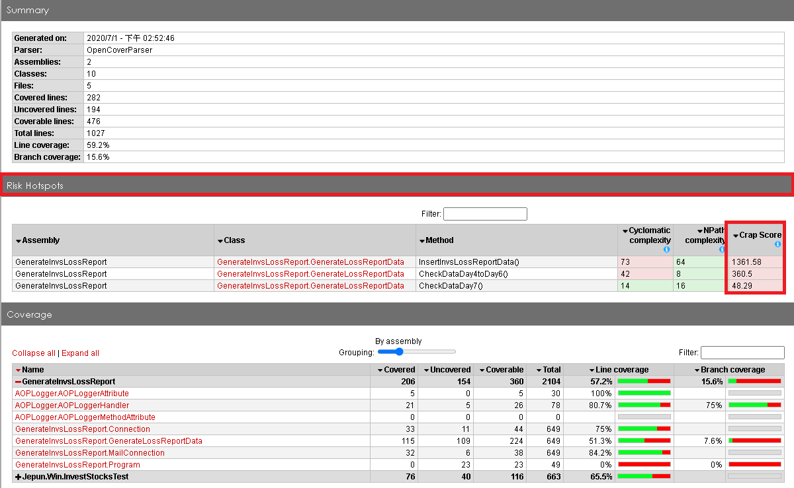
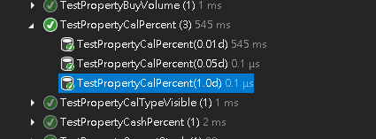

NUnit
NUnit是什麼
NUnit是一種測試框架，常見的還有MSTest、xUnit，但因為我需要免費的工具(AXOCover)去看測試涵蓋率，所以選了一個AXOCover有支援的測試框架
Visual Studio 使用NUnit執行單元測試
安裝visual studio NUnit2 test adapter extension
一定要裝，不然不能執行NUnit測試框架(Visual Studio 2017 Community)

安裝完在開發的專案裡面開一個NUnit的測試專案
測試怎麼寫
測試專案結構大概長這樣，有SetUp跟TestCase Attribute
1 | public class Tests |
SetUp
SetUp attribute 是每個測試(TestCase)執行之前都會執行的動作，像是把要測試的物件產生實例(instance)就可以放在Setup方法裡面，要注意這邊他是依照SetUp Attribute去做初始化的動作，不是因為方法名稱才會有這樣的行為
1 | public class Tests |
TestCase
TestCase 就是每個測試的案例
1 | public class Tests |
範例
要先把方案(Solution)中 MSTest的專案卸載掉，不然Visual Studio會只執行MSTest專案的測試
1 | public class Tests |
執行測試

測試結果

AXOCover - 使用AXOCover看測試涵蓋率
安裝visual studio AXO Cover extension

如果沒裝，執行結果大概長這樣

如果有裝的話…
AXO Cover - 測試涵蓋率

在Code中了解目前測試的狀態(已測試、尚未測試、部分測試)更清楚問題可能會發生在那些地方

還能輸出報表，透過Risk Hotspots知道自己程式哪邊可能有問題哪邊寫得很爛(Scrap Score)，可以用這個垃圾分數當成依據，去把程式改得更好，或是從根本調整自己寫程式的習慣

使用TestCase Attribute
如果客戶發生問題，可以針對他的情境去測試，不用額外再開UI出來，可以在測試專案中，組出來User的操作，模擬問題


為啥要寫測試
常常會有那種改A壞B、改B壞C，如果改完程式有測出來問題那就算了，往往都是改了之後只針對當下的情境去測試，沒有測到其他的情況，最後發現問題的時候都是資料已經錯很久了，要花時間查、還要想辦法把有問題的資料修正，很麻煩
啥時要寫測試
有時間就寫，你不知道什麼時候程式會壞掉或是被誰改壞掉，如果有寫測試，每次Pull完就可以執行一下，看程式還能不能正常運作、哪個地方有問題。
就算公司沒人在做，你也可以自己寫給自己用，最好是開發時估工時就把寫測試的時間算進去，code寫完過了一年三年，中間就算經手很多人，只要當初的測試依跑，就能知道到底還有多少地方可以正常執行，還可以透過測試知道他運作的流程是什麼